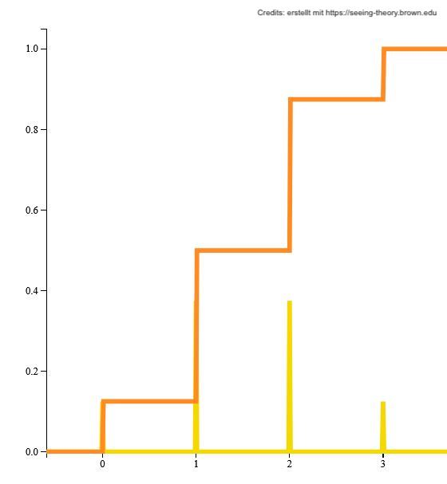
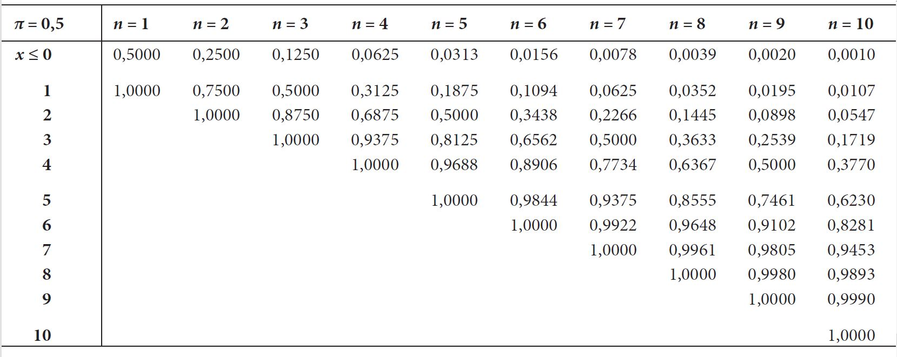

Übung 5
Aufgaben
Hinweise:
- Die Formelsammlung zu dieser Übung finden Sie auf OLAT. Benützen Sie sie, wann immer Sie möchten.
- Für die Berechnungen benötigen Sie einen einfachen Taschenrechner (auch gut auf dem Laptop möglich) mit dem Sie beispielsweise \(0.8^9\) ausrechnen können.
- Die Tabelle zur Binomialverteilung finden Sie im Lehrbuch und unter Onlinematerialen des Verlags hier.
- Für die Aufgaben und an der Prüfung stehen Ihnen die nötigen Ausschnitte der Tabellen zur Verfügung.
Aufgabe 5.1
- Was ist eine binomiale Zufallsvariable?
Eine binomiale Zufallsvariable ist eine spezielle diskrete Zufallsvariable. Sie ist definiert als die Häufigkeit von \(n\) unabhängigen dichotomen (auch binär genannt) Zufallsvariablen mit dem Parameter \(\pi\). Sie wird häufig verwendet, um die Anzahl der Erfolge bei einer bestimmten Anzahl identischer binärer Experimente zu modellieren, z. B. die Anzahl der Köpfe bei fünf Münzwürfen.
- Durch welche Parameter wird eine Binomialverteilung beschrieben?
Die Binomialverteilung wird durch die Wahrscheinlichkeit für das interessierende Ereignis (\(\pi\)) und die Anzahl der Durchgänge (\(n\)) vollständig beschrieben.
Man kann die Binomialverteilung einer Zufallsvariable \(X\) so darstellen:
\(X\sim B\left(n,\pi\right)\)
Aufgabe 5.2
Wir haben gesehen, dass Zufallsvariablen eine Verteilung besitzen. In dieser Aufgabe sollen Sie eine solche Verteilung zeichnen.
Erstellen Sie per Hand die grafische Darstellung (a) der Wahrscheinlichkeitsverteilung und (b) der Verteilungsfunktion einer Zufallsvariablen \({X}\), die folgende Verteilung aufweist: \(X\sim B\left(3,0.5\right)\). Die Verteilung entspricht beispielweise der Anzahl Köpfe, wenn eine Münze dreimal geworfen wird.
Sie können die Aufgabe ohne weitere Hilfestellung lösen oder hier einer Schritt-für-Schritt-Anleitung folgen.
Welche Ereignisse (z. B. \({(K, K, K)}\), d.h. 3-mal Kopf) können eintreffen? Notieren Sie die verschiedenen Möglichkeiten oder bestimmen Sie die Wahrscheinlichkeit für jede «Anzahl Kopf». Sie müssen herausfinden, wie wahrscheinlich es ist, dass 0-mal Kopf vorkommt, 1-mal Kopf vorkommt, 2.-mal Kopf vorkommt und 3-mal Kopf vorkommt. Dazu müssen Sie auch bestimmen, wie viele Möglichkeiten es insgesamt gibt.
Zeichen Sie nun eine \(x\)-Achse und \(y\)-Achse und wählen Sie die Achsenabschnitte. Auf der \(x\)-Achse können Sie die Ereignisse abbilden (d.h. 0, 1, 2, 3 [ = Anzahl Kopf bei dreifachem Münzwurf] und auf der \(y\)-Achse die Wahrscheinlichkeiten (z. B. 0.125, 0.375 usw.) eintragen.
Zeichnen Sie nun für jedes Ereignis die Wahrscheinlichkeit als Säule oder Punkt ein. Sie erhalten somit vier Säulen.
Kumulieren Sie die Wahrscheinlichkeiten bis zum jeweiligen Ereibnis indem Sie die Wahrscheinlichkeiten addieren. Zeichnen Sie so die Verteilungsfunktion (Linie) ein. Die treppenförmige Linie sollte bei der Wahrscheinlichkeit 1 enden.
Ihre Lösung könnte zum Beispiel so aussehen:

Zusatz
Versuchen Sie die Verteilung auch in dieser interaktiven Visualisierung zu erstellen. Wählen Sie «Binomialverteilung» aus und definieren Sie die Parameter gemäss unserer Aufgabe. Sie können rechts in der Verteilung den Ausschnitt vergrössern, verkleinern und mit dem orangen Punkt die Verteilungsfunktion einzeichnen.
Aufgabe 5.3
Notieren Sie die Binomialverteilung der Zufallsvariablen \(X\): „Anzahl Kopf beim sechsfachen Münzwurf“ und berechnen Sie den Erwartungswert und die Varianz.
Zufallsvariable \(X\): „Anzahl Kopf beim sechsfachen Münzwurf“ ist binomialverteilt mit \(X\sim B(6,0.5)\)
Erwartungswert: \(\mu=n\cdot\pi=6\cdot0.5=3\)
Varianz: \(\sigma^2=n\cdot\pi\cdot\left(1-\pi\right)=6\cdot0.5\cdot\left(1-0.5\right)=3\cdot0.5=1.5\)
Aufgabe 5.4
Die Subskala eines Intelligenztests besteht aus fünf Fragen, wobei zu jeder Frage vier Antwortmöglichkeiten gegeben sind und je eine Antwort korrekt ist. Der Intelligenztest wird nun rein zufällig ausgefüllt.
- Wie gross ist die Wahrscheinlichkeit, dass alle Antworten korrekt beantwortet werden?
\(P\left(5\right)={0.25}^5=0.0.00098\)
- Wie gross ist die Wahrscheinlichkeit, dass keine Antwort richtig beantwortet wird?
\(P\left(0\right)={0.75}^5=0.2373\)
- Wie gross ist die Wahrscheinlichkeit, dass mindestens drei Antworten korrekt beantwortet werden?
\(P\left(5\right)={0.25}^5=0.00098\)
\(P\left(4\right)=\binom{5}{4}\cdot 0.25^4\cdot 0.75^1=5\cdot 0.0039\cdot 0.75=0.0146\)
\(P\left(3\right)=\binom{5}{3}\cdot 0.25^3\cdot 0.75^2=10\cdot 0.0156\cdot 0.5625=0.0878\)
\(P\left(5\right)+P\left(4\right)+P\left(3\right)=0.00098+0.0146+0.0878\approx0.1034\)
Die Wahrscheinlichkeit liegt bei etwa 0.10 bzw. 10%, dass drei oder mehr Aufgaben zufällig korrekt gelöst wurden.
Aufgabe 5.5
Berechnen Sie die Wahrscheinlichkeiten für folgende Ereignisse mit Hilfe der Formel der Binomialverteilung.
- für 5 Erfolge bei 6 Versuchen mit \(\pi=0.5\)
\(P\left(5\right)=\binom{6}{5}\cdot0.5^5\cdot0.5^1= 6\cdot0.03125\cdot0.5=0.09375\)
- für 4 Erfolge bei \(n=7\) Versuchen mit \(\pi=0.9\).
\(\binom{n}{x} = \frac{n!}{(n-x)!\cdot x!}\)
\(\binom{7}{4} = \frac{7!}{(7-4)!\cdot 4!}=\frac{7\cdot 6\cdot 5\cdot 4\cdot3 \cdot2}{3\cdot 2\cdot 4\cdot 3\cdot 2}=\frac{210}{6}=35\)
Sie finden die Formel zur Berechnung des Binomialkoeffizienten auch in der Formelsammlung unter 3.1 Binomialverteilung.
\(P\left(4\right)=\binom{7}{4}\cdot0.9^4\cdot0.1^3=35\cdot0.6561\cdot0.001=0.0230\)
- für mindestens 8 Treffer bei \(n=9\) Versuchen mit \(\pi=0.8\).
\(P\left(8\right)+P\left(9\right)=\binom{9}{8}\cdot0.8^8\cdot0.2^1+0.8^9=9\cdot0.1678\cdot0.2+0.1342=0.4362\)
- für mindestens einen Treffer bei \(n=21\) Versuchen mit \(\pi=0.1\).
\(P\left(x\geq1\right)=1-P\left(0\right)=1-0.9^{21}=1-0.1094=0.8906\)
Eine mögliche Prüfungsfrage könnte lauten:
Wie gross ist die Wahrscheinlichkeit durch Münzwurf in 6 Versuchen 5-mal Kopf zu erzielen?
Die Wahrscheinlichkeit beträgt \(\approx0.094\).
Die Wahrscheinlichkeit beträgt \(\approx0.078\).
Die Wahrscheinlichkeit beträgt \(\approx0.016\).
Die Wahrscheinlichkeit beträgt \(\approx0.1875\).
Lösung siehe Aufgabe 5.5a.
Aufgabe 5.6
Bestimmen Sie die Wahrscheinlichkeiten der Binomialverteilung mit Hilfe der Tabelle.
Unterhalb finden Sie den benötigten Ausschnitt aus der Tabelle A.1.

- Bei 6 Versuchen durch Münzwurf \((\pi=0.5)\) höchstens 4-mal Kopf zu werfen.
\(P\left(x\leq4\right)=0.8906\)
Die Wahrscheinlichkeit liegt bei \(0.89\) oder \(89\)%. Aus der Spalte \(n=6\) wird der 5. Wert für \(x\le4\) abgelesen.
- Bei 6 Versuchen durch Münzwurf \((\pi=0.5)\) mindestens 5-mal Kopf zu werfen.
\(P\left(x\ge5\right)=1-P\left(x\le4\right)=1-0.8906=0.1094\)
Ausserm entspricht 5 oder 6-mal Kopf dem gleichen Wert, wie wenn man 1 oder 0-mal Zahl werfen würde.
Also könnte man auch den Wert bei \(x\le1=0.1094\) direkt ablesen. Dies geht aber nur, weil die Wahrscheinlichkeit von Zahl auch \(\pi=0.5\) beträgt. Bei der Aufgabe in der Vorlesung müsste ich dazu eine Tabelle für \(\pi=0.8\) haben. Diese gibt es jedoch nicht, da wir alle nötigen Informationen in der Tabelle \(\pi=0.2\) finden. Falls Sie also einen Wert nicht finden, überprüfen Sie Ihren \(\pi\)-Wert und ob Sie die richtige Tabelle ausgewählt haben.
- Bei 6 Versuchen durch Münzwurf \((\pi=0.5)\) genau 5-mal Kopf zu werfen.
\(P\left(x=5\right)=P\left(x\le5\right)-P\left(x\le4\right)=0.9844-0.8906=0.0938\)
Um auf genau 5-mal Kopf zu kommen, müssen Sie zuerst ablesen, wie gross die Wahrscheinlichkeit für 5-mal oder weniger Kopf, also \(P\left(x\le5\right)\), ist. Danach subtrahieren Sie die Wahrscheinlichkeit für weniger als 5-mal Kopf, d.h. für alle Ereignisse mit 4, 3, 2, 1 oder 0-mal Kopf, also \(P\left(x\le4\right)\). Die Differenz ergibt genau 5-mal Kopf.
Sie sind somit zum gleichen Ergebnis gekommen, wie bei Aufgabe 5.5a. Sie kennen nun also zwei Varianten, wie sie eine solche Aufgabe lösen können – mit der Formel und mit der Tabelle.
Sie haben bereits \(\sqrt{5^2}\) Statistikübungen abgeschlossen. Gönnen Sie sich eine Belohnung!
Reuse
Citation
@online{senn2024,
author = {Senn, Mirjam and Wyssen, Gerda},
title = {Übung 5},
date = {2024-10-14},
url = {https://psylu.github.io/statistik1-hs24/pages/exercises/exercise_05.html},
langid = {en}
}